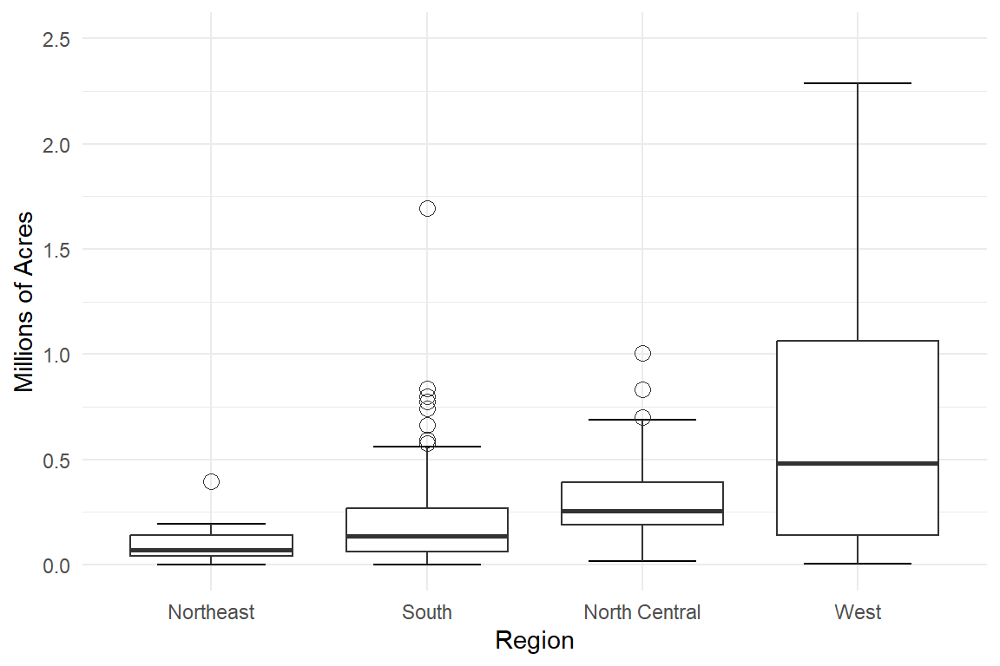

library(tidyverse);library(knitr)
library(sampling); library(survey)
# Load data
agpop <- read_csv(here::here("data", "agpop.csv"))
agstrat <- read_csv(here::here("data", "agstrat.csv"))Stratified Sampling
A method to use additional information about the population in the survey design

What is Stratified Sampling
Why Use A Stratified Sample?
- You can protect against the possibility of a really bad sample with overrepresentation of a subpopulation. Stratified Sampling guarantees set proportions of subpopulations in your sample. Example: You can ensure 50% male and 50% female in a sample.
- Stratified sampling means you can know the precision of the data collected for subgroups of the population. Example: comparing experiences of male and female graduates when males vastly outnumber female graduates.
- Stratified sampling can be less costly or more convenient. You can use different sampling frames, designs, or field procedures for different strata. Example: You could use mail, email, telephone, or internet surveys based on what works best for each subpopulation
- This method has lower variance estimates for population means and totals making it more precise than an SRS. This is demonstrated using a motivating example next.
Motivating Example - Estimating farm details.
During the colonial period of the United States travel was limited and most of the population lived on the East coast. The states are small in size, the population denser, and thus the farmland is smaller. In the 1800’s the US “acquired” the western half of the US in large patches. This led to much larger farmland, owned by fewer individuals.
The distribution of farm acreage in 1992 for each region is summarized below.
Code
# Mutate data to create names for levels and labels in boxplot
agstrat.plot <- agstrat %>%
mutate(
region_factor = factor(
region,
levels = c("NE", "S", "NC", "W"),
labels = c("Northeast", "South", "North Central", "West")
),
acres_million = acres92/1e6 # convert acres to millions
)
ggplot(agstrat.plot, aes(x = region_factor, y = acres_million)) +
stat_boxplot(geom = "errorbar", linetype = "solid", width = 0.5) +
geom_boxplot(outlier.shape = 1, outlier.size = 3) +
coord_cartesian(ylim = c(0, 2.5)) +
labs(
x = "Region",
y = "Millions of Acres"
) +
theme_minimal()
Code
agstrat %>% group_by(region) %>%
summarise(sample.average = mean(acres92),
sample.variance = var(acres92)) %>%
kable()| region | sample.average | sample.variance |
|---|---|---|
| NC | 300504.16 | 29618183543 |
| NE | 97629.81 | 7647472708 |
| S | 211315.04 | 53587487856 |
| W | 662295.51 | 396185950266 |
Each region has its own box plot we can compare. Each with a marked median (the thick solid line), the 25th and 75th percentiles marked by the edges of the box and its outliers. Each of the regions (except the West) tend to have quite a few high-end outliers (aka positively skewed). The NE region has the smallest average farm size (9.7k acres) and the smallest variance (7.6B) whereas the west has quite a large variance (396B) and mean(622k)
To properly estimate the average size of a farm, or the total number of farms, we want to ensure our sample is representative of the population. A SRS may end up oversampling small farms from the east and missing out on larger farms from the west. This is why we considered stratification for this example.
Example: Estimating the total acerage of farmland.
The data contained in agstrat.csv comes from a is stratified sample across four regions of the United States: Northeast, North Central, South, and West.
Using this stratified sample, estimate the total number of acres of farmland in the United States in 1992 by calculating the within strata totals, and then combining across strata.
Since we took an SRS in each stratum, we estimate the population total within each stratum using \(\hat{t} = N\bar{y}\) and \(\hat{V}(\hat{\tau}) = N^{2}\hat{V}(\bar{y})=N^{2}(1 - \frac{n}{N})\frac{s^{2}}{n}\) within each strata.
For example to estimate the total number of acres devoted to farms in the Northeast,
220*97629.81[1] 21478558with estimated variance
220^2*(1-21/220)*(7647472708)/21[1] 1.594316e+13Lohr table 3.2 gives estimates of the total number of farm acres, \(\hat{t}_{h}\), and estimated variance of the total, \(\hat{V}(\hat{t}_{h})\), for each of the \(h=4\) strata. Knowing this is an important key detail that shows us that the overall variance of the estimate is reduced by having the regions broken up into strata. This table also shows that if used efficiently, less samples are needed with stratified sampling to achieve the same, it not better, precision. In regards to the farm acres, this table highlights the variability in sizes of farms and area used for farm land in each stratum.
Gain from stratification
Observations within strata are more similar to each other, than they are to the population as a whole. A reduction in variance in individual strata can lead to a reduced variance for the population estimate.
This is estimated by the ratio:
\[ \frac{\mbox{estimated variance from stratified sample}}{\mbox{estimated variance from SRS}} \]
Using the farm example,
\[\frac{2.5419 * 10^{15}}{3.3837 * 10^{15}} =0.75 \]
The variance is reduced by 75% from the method of stratified sampling method compared to the SRS method.
Theory of Stratified Sampling
The formulas presented in this section are summarized in a table on the formulas page.
Notation
- \(n\) - total sample size, from all strata
- \(N\) - total population size, from all strata
- \(y_{hj}\) - value of the \(j^{th}\) unit in stratum \(h\)
- \(H\) - total number of strata
| Measure on stratum \(h\) | Population | Statistic |
|---|---|---|
| number of units | \(N_{H}\) | \(n_h\) |
| total (sum of \(y_{hj}\)) | \(t_h\) | \(\hat{t}_h\) |
| mean of \(y_{hj}\) | \(\mu_{h}\) | \(\bar{y}_h\) |
| variance of \(y_{hj}\) | \(S^2_h\) | \(s^2_h\) |
| proportion of event | \(p_h\) | \(\hat{p}_h\) |
Estimators for Population Parameters
The estimators for the population parameters are the sum (or weighted sum) of the strata level estimators. Since an SRS was taken within each strata, \(\hat{\tau}_{str}\) and \(\bar{y}_{str}\) are unbiased estimators of \(\tau\) and \(\mu\) respectively.
- \(\hat{\tau}_{str} = \sum_{h}\hat{\tau}_{h}\) - the estimate for \(t\), the total for the entire population
- \(\bar{y}_{str} = \sum_{h} \frac{N_{h}}{N}\bar{y}_{h}\) - the estimate for \(\mu\), the overall population mean. This is the weighted average of the sample stratum means.
- \(\hat{p}_{str} = \sum_{h}\frac{N_{h}}{N}\hat{p}_{h}\) - the estimated overall population proportion \(p\)
Variance of overall estimators
Since the SRS’s within each strata are taken independently, the variances within each strata are mutually independent. Thus the estimated variance for the populations estimates are calculated by summing up (over the \(H\) layers), the individual strata variances.
- \(\hat{V}(\hat{\tau}_{str}) = \sum_{h} \hat{V}(\hat{\tau}_{h})\) - the estimate for the variance of the estimate of the population total found by substituting the sample variances for the population variances.
- \(\hat{V}(\bar{y}_{str}) = \frac{1}{N^2}\hat{V}(\hat{\tau}_{str})\) - the estimate for the variance of the estimate of the population mean found by substituting the sample variances for the population variances.
- \(\hat{V}(\hat{p}_{str}) = \sum_{h} (1-\frac{n_h}{N_h})\big(\frac{N_{h}}{N}\big)^2\Big(\frac{\hat{p}_h(1-\hat{p}_h)}{n_h-1}\Big)\) - the estimated variance of the estimated overall population proportion
The standard errors for these estimators are the square roots of their estimated variances. By substituting our sample variances for population variances, that is \(s_h\) for \(S_h\), we can obtain unbiased estimators of the variances.
Confidence Intervals
Confidence intervals for stratified samples Conditions for formula to be valid: either (1) the sample sizes within EACH stratum are large, or (2) there is a large number of strata
100(1- \(\alpha\))% confidence interval is given by: \[\bar{y}_{str} \pm z_{\alpha/2} * SE(\bar{y}_{str})\] However, most survey packages use a \(t_{n-H}\) distribution instead of using the normal assumption.
Strata level estimates
| Measure on stratum \(h\) | Estimate | Variance |
|---|---|---|
| total | \(\hat{\tau}_{h} = N_{h}\bar{y_h}\) | \(\hat{V}(\hat{\tau}_{h}) = (1-\frac{n_h}{N_h})N_{h}^2 \frac{s^2_h}{n_h}\) |
| mean | \(\bar{y}_{h} = \frac{1}{n_{h}}\sum_{j} y_{hj}\) | \(\hat{V}(\bar{y}_{h}) = \frac{1}{N^2}V(\hat{\tau}_{h})\) |
| proportion | \(\hat{p}_{h} = \bar{y}_{h}\) | \(\hat{V}(\hat{p}_{h}) = (\frac{n_h}{n_h-1})\hat{p}_h(1-\hat{p}_h)\) |
Example: Estimate the total number of farm acres in 1992 (Table 3.2)
Estimate the total number of acres of farmland in the United States in 1992 by calculating the within strata totals, and then combining across strata.
- Calculate summary statistics for each region.
strata.summary.stats <- agstrat %>%
group_by(region) %>%
summarize(y.bar.h = mean(acres92),
s2.h = var(acres92),
n.h = n())
strata.summary.stats# A tibble: 4 × 4
region y.bar.h s2.h n.h
<chr> <dbl> <dbl> <int>
1 NC 300504. 29618183543. 103
2 NE 97630. 7647472708. 21
3 S 211315. 53587487856. 135
4 W 662296. 396185950266. 41- Calculate Population region sizes, add this vector to the data frame created above.
table(agpop$region) ## number of farms by region
NC NE S W
1054 220 1382 422 strata.summary.stats$N.h = c(1054,220,1382,422)
strata.summary.stats ##added as column # A tibble: 4 × 5
region y.bar.h s2.h n.h N.h
<chr> <dbl> <dbl> <int> <dbl>
1 NC 300504. 29618183543. 103 1054
2 NE 97630. 7647472708. 21 220
3 S 211315. 53587487856. 135 1382
4 W 662296. 396185950266. 41 422- Calculate the within strata sample total: \(\hat{\tau}_{h} = N_{h}\bar{y_h}\)
strata.summary.stats$t.h <- strata.summary.stats$y.bar.h*strata.summary.stats$N.h
strata.summary.stats# A tibble: 4 × 6
region y.bar.h s2.h n.h N.h t.h
<chr> <dbl> <dbl> <int> <dbl> <dbl>
1 NC 300504. 29618183543. 103 1054 316731380.
2 NE 97630. 7647472708. 21 220 21478558.
3 S 211315. 53587487856. 135 1382 292037391.
4 W 662296. 396185950266. 41 422 279488706.- Calculate the within-strata variance of this total \[\sum_{h=1}^{H} V(\hat{t}_h) = \sum_{h=1}^{H} \left( 1 - \frac{n_h}{N_h} \right)N_{h}^2 \frac{S_h^2}{n_h}\]
strata.summary.stats$V.t <- ((1 - (strata.summary.stats$n.h/strata.summary.stats$N.h))*(strata.summary.stats$N.h^2)*
(strata.summary.stats$s2.h)/strata.summary.stats$n.h)
strata.summary.stats# A tibble: 4 × 7
region y.bar.h s2.h n.h N.h t.h V.t
<chr> <dbl> <dbl> <int> <dbl> <dbl> <dbl>
1 NC 300504. 29618183543. 103 1054 316731380. 2.88e14
2 NE 97630. 7647472708. 21 220 21478558. 1.59e13
3 S 211315. 53587487856. 135 1382 292037391. 6.84e14
4 W 662296. 396185950266. 41 422 279488706. 1.55e15- Calculate the overall total and variance by summing these values across the strata.
\[\hat{\tau}_{str} = \sum_{h}\hat{\tau}_{h}, \qquad \mbox{ and } \qquad \hat{V}(\hat{t}_{str}) = \sum_{h=1}^{H} V(\hat{t}_h)\]
(total.sum <- sum(strata.summary.stats$t.h)) [1] 909736035(total.var <- sum(strata.summary.stats$V.t))[1] 2.541899e+15Sampling Weights
How are weights calculated?
- The sampling weight for an observation is the reciprocal of its probability of inclusion.
- The probability of inclusion for a unit in a stratum is calculated as the sample size divided by the total number of units in that stratum.
\[w_{hj}=\frac{N_h}{n_h}\]
The sum of the weights will equal the population size.
\(\sum_h\sum_jw_{hj}=N\)
How are weights used?
The stratified sampling estimator of the total population is expressed as the sum of weighted observations across all strata.
\[\hat{t}_{str}=\sum_h\sum_jw_{hj}y_{hj}\]
- apply weights to observations
- inner sum is within strata
- outer sum is across strata
The population mean-average of the observations weighted by strata.
\[\bar{y}_{str}=\frac{\sum_h\sum_jw_{hj}y_{hj}}{\sum_h\sum_jw_{hj}}\]
Example: Re-Estimate the total number of farm acres in 1992 using sample weights
We
agstrat$acreswt <- agstrat$acres92 * agstrat$strwt
sum(agstrat$acreswt)[1] 909736036
You try it Caribou weights
Allocation Methods
Example: Calculating Allocations for a Survey of Colleges
Suppose we are interested in taking a survey of US colleges and universities.
We can make the assumption that the primary variables we are interested in studying in this survey, such as total instructional budget, or number of students employed full time five years after graduation, are related to the size of the institution.
The college.csv dataset contains 1,372 US colleges and universities. One such variable categorizes institutions by size and residential status. We can stratify by this variable, combining all “Very small” institutions into one strata.
frame <- readr::read_csv(here::here("data", "college.csv"))
frame <- frame %>% arrange(ccsizset)
# create a strata column that labels all very small institutions by the same label
frame$strata<- frame$ccsizset
idx <- frame$ccsizset < 8
frame$strata[idx] <- 8Find the size of each stratum
strata.info<-as.data.frame(table(frame$strata))
colnames(strata.info)<- c("Stratum", "N_h")
strata.info Stratum N_h
1 8 195
2 9 45
3 10 123
4 11 347
5 12 80
6 13 160
7 14 158
8 15 95
9 16 126
10 17 43We do not know the variances of the variables to be studied, but we can assume that they will be roughly proportional to the variances of ugds, the number of undergraduate students at the institution. We can calculate the variances of each strata and use them to calculate the Neyman allocations of each strata.
Find the sample strata means \(\bar{y}\) and standard deviations \(s\).
- Code method 1
strata.means<- rep(0,10)
for (i in 1:10) {
strata.means[i]<-mean(frame$ugds[frame$strata == strata.info$Stratum[i]])
}
strata.means [1] 639.2359 2004.0222 1611.6911 1639.4957 5926.6875 5274.7937
[7] 4095.6266 21566.9263 18730.0238 11771.7209# Calculating S_h (within stratum standard deviation)
for (i in 1:10) {
ssq <- sum((frame$ugds[frame$strata == strata.info$Stratum[i]]-strata.means[i])^2)
strata.info$S_h[i] <- round(sqrt(ssq*(1/(strata.info$N_h[i]-1))))
}
strata.info$S_h [1] 251 784 515 508 2490 2150 1473 11273 9178 6844- Code method 2
frame %>% group_by(strata) %>% summarize(mean_ugd = mean(ugds),
s_ugd = sd(ugds))# A tibble: 10 × 3
strata mean_ugd s_ugd
<dbl> <dbl> <dbl>
1 8 639. 251.
2 9 2004. 784.
3 10 1612. 515.
4 11 1639. 508.
5 12 5927. 2490.
6 13 5275. 2150.
7 14 4096. 1473.
8 15 21567. 11273.
9 16 18730. 9178.
10 17 11772. 6844.We want to take a sample size of 200. For finding the Neyman allocations, we will use the formula \(n*\frac{N_hS_h}{\sum_{l} N_lS_l }\) and round to whole numbers
Sample_size <- 200
d <- sum(strata.info$N_h*strata.info$S_h)
strata.info$Neyman<- round(Sample_size*(strata.info$N_h*strata.info$S_h/d))
strata.info$Neyman [1] 3 2 3 10 11 19 13 59 64 16For finding the Proportional allocations we will use the formula \(n*\frac{N_h}{N}\) and round to the nearest whole number
N<- sum(strata.info$N_h)
strata.info$Proportional<- round(Sample_size*(strata.info$N_h/N))
strata.info$Proportional [1] 28 7 18 51 12 23 23 14 18 6Comparing them all:
# We can edit the stratum names to be more readable
strata.info$Stratum <- c("Very small", "Small, primarily nonresidential", "Small, primarily residential", "Small, highly residential", "Medium, primarily nonresidential", "Medium, primarily residential", "Medium, highly residential", "Large, primarily nonresidential", "Large, primarily residential", "Large, highly residential")
strata.info %>% janitor::adorn_totals() %>% kable()| Stratum | N_h | S_h | Neyman | Proportional |
|---|---|---|---|---|
| Very small | 195 | 251 | 3 | 28 |
| Small, primarily nonresidential | 45 | 784 | 2 | 7 |
| Small, primarily residential | 123 | 515 | 3 | 18 |
| Small, highly residential | 347 | 508 | 10 | 51 |
| Medium, primarily nonresidential | 80 | 2490 | 11 | 12 |
| Medium, primarily residential | 160 | 2150 | 19 | 23 |
| Medium, highly residential | 158 | 1473 | 13 | 23 |
| Large, primarily nonresidential | 95 | 11273 | 59 | 14 |
| Large, primarily residential | 126 | 9178 | 64 | 18 |
| Large, highly residential | 43 | 6844 | 16 | 6 |
| Total | 1372 | 35466 | 200 | 200 |
We can see that both allocations take a sample of 200 out of 1372 schools
Which allocation to use?
Proportional Allocation: The best choice if you intend to have a “miniature version” of your population. The weight is the same for every unit of N/n, hence the stratum sample size is proportional to its population size. They typically have smaller variances than those similar estimates of an SRS.
Disproportional Allocation: The best choice if you want your strata to be oversampled to achieve specific goals within sampling. This may be to ensure certain things like a specific precision or increase representation of different variance groups.
Neyman Allocation: The best choice when you have certain strata with higher variances and want to oversample those to reduce the overall variance. Can (but not always) improve precision for specifically chosen variables.
There is no one specific method that is always the best. What you want from and how you intend to analyze your samples will help you to determine what method works best for you, or which combination/hybrid of methods.
Selecting Strata
Defining Strata
Stratified sampling, as we’ve learned, improves the precision for every variable measured in a survey, and is almost always better from a variance standpoint than an SRS.
Ideally for a stratified sample, we would stratify by the values of y, but we don’t exactly know what the exact values of y are, so we use variables that are closely related to it. For example, if we’re trying to determine farm income, we may use the size of said farm as a stratifying variable.
Using Example 3.13, in order to estimate the number of homeless people in certain regions, surveyors choose one night to conduct a count of people staying on streets, in bus-stops, subway stations, etc. And also survey people in emergency shelter or transition housing. Getting further into the example- we’re assuming that the survey is done in New York City. The area of the city is much too large to survey in one night, so the city is split up into “high-density” and “low-density” areas. This results in 12 strata by having one high-density and one low-density stratum for each borough, and also for the subway system. This sampling design allows New York City to obtain the necessary data in just one night with roughly 2,000-2,500 volunteer surveyors, and allows for a statistically valid estimate.
How Many Strata?
Example: Estimating homeless population from NYC
Background: In the United States, state and local agencies are responsible for coordinating homeless services annually estimate the number and characteristics of individuals experiencing homelessness within their regions. Each agency selects one of the last ten nights in January to conduct the counts of both sheltered and unsheltered populations at that specific point in time. These surveys (refered to as “Picture in Time”) are typically conducted on single nights to minimize the risk of double-counting and reduce the effort required for the teams of volunteers who canvass to survey the unsheltered population.
It is imperative to develop sampling plans that provide the most accurate estimates of the unsheltered population’s size possible and those enabling us to have contact with as many unsheltered individuals in the region as feasible.
Due to reasons such as the impossible task of visiting every location in a large city neighborhoods during a single night, cost of performing such task, and also the difference in population levels, designing a survey which fits our goals will be seen to influence how we defined our strata by using separation of these area.
Below is a summary table for a stratified sample from the pitcount.csv file, which mimics the NYC homelessness sample design in example 3.13 of the book. This however is not the data for NYC homelessness, rather that of a fictional city.
pitdta <- readr::read_csv(here::here("data/pitcount.csv"))
pitdta %>% select(strat, division, density, popsize, sampsize) %>%
unique() %>% kable()| strat | division | density | popsize | sampsize |
|---|---|---|---|---|
| 1 | 1 | High | 12 | 12 |
| 2 | 2 | High | 8 | 8 |
| 3 | 3 | High | 4 | 4 |
| 4 | 4 | High | 16 | 16 |
| 5 | 1 | Low | 384 | 24 |
| 6 | 2 | Low | 192 | 12 |
| 7 | 3 | Low | 240 | 15 |
| 8 | 4 | Low | 144 | 9 |
Here we see a total of 8 strata defined by both area (Divisions) and density levels inside of the areas. The first was done as various Divisions have different homelessness totals as per differences in social-economic factors within these areas also impact the homelessness in these divisions. In this study, we see the simultaneous stratification of areas based on density levels along this. This probably was done to make sure that we would be able to account for potential higher homelessness rates in densely populated areas as opposed to low density areas.
Another choice to notice is that high density areas were seen as a priority to gather information on in sample, therefore for our strata, we used the full populations in these areas(high density by divisions). Low density areas were proportionally allocated.
Using R
Selecting a Stratified Random Sample
Using the strata function from the sampling package
- Sort the data by the stratification variable
agpop.sorted <- agpop %>% arrange(region)- Specify the desired within-strata sample sizes \(n_{k}\).
n.k <- c(103, 21, 135, 41)- Create the sampling index of records to select using the
stratafunction with arguments specifying the strata names, strata size, and sampling method within strata.
strat.idx <- sampling::strata(data = agpop.sorted,
stratanames = "region",
size = n.k, method = "srswor")- Extract the data records that correspond to the sampling index.
ag.str <- getdata(agpop.sorted, strat.idx)
head(ag.str) county state acres92 acres87 acres82 farms92 farms87 farms82
4 APPANOOSE COUNTY IA 238609 244661 236501 827 891 900
9 BREMER COUNTY IA 236668 235086 250402 1058 1140 1287
18 CHEROKEE COUNTY IA 336254 338708 340594 979 1091 1214
25 DALLAS COUNTY IA 312173 328319 346023 944 1081 1208
30 DICKINSON COUNTY IA 202249 211002 227557 554 593 652
47 IDA COUNTY IA 272831 260103 259676 729 787 874
largef92 largef87 largef82 smallf92 smallf87 smallf82 region ID_unit
4 28 33 23 25 39 36 NC 4
9 25 18 11 96 116 109 NC 9
18 41 31 18 64 86 94 NC 18
25 67 59 48 82 85 81 NC 25
30 30 34 31 38 47 43 NC 30
47 48 30 10 54 58 59 NC 47
Prob Stratum
4 0.09772296 1
9 0.09772296 1
18 0.09772296 1
25 0.09772296 1
30 0.09772296 1
47 0.09772296 1- Calculate the sampling weights using the inclusion probabilities (these were created as the variable
Probwhen you used thestratafunction)
ag.str$wt <- 1/ag.str$Prob
head(ag.str) county state acres92 acres87 acres82 farms92 farms87 farms82
4 APPANOOSE COUNTY IA 238609 244661 236501 827 891 900
9 BREMER COUNTY IA 236668 235086 250402 1058 1140 1287
18 CHEROKEE COUNTY IA 336254 338708 340594 979 1091 1214
25 DALLAS COUNTY IA 312173 328319 346023 944 1081 1208
30 DICKINSON COUNTY IA 202249 211002 227557 554 593 652
47 IDA COUNTY IA 272831 260103 259676 729 787 874
largef92 largef87 largef82 smallf92 smallf87 smallf82 region ID_unit
4 28 33 23 25 39 36 NC 4
9 25 18 11 96 116 109 NC 9
18 41 31 18 64 86 94 NC 18
25 67 59 48 82 85 81 NC 25
30 30 34 31 38 47 43 NC 30
47 48 30 10 54 58 59 NC 47
Prob Stratum wt
4 0.09772296 1 10.23301
9 0.09772296 1 10.23301
18 0.09772296 1 10.23301
25 0.09772296 1 10.23301
30 0.09772296 1 10.23301
47 0.09772296 1 10.233015b. Check that the sampling weights sum to the stratum population sizes.
ag.str %>% group_by(region) %>% summarize(sum.wts = sum(wt))# A tibble: 4 × 2
region sum.wts
<chr> <dbl>
1 NC 1054.
2 NE 220
3 S 1382.
4 W 422 table(agpop.sorted$region)
NC NE S W
1054 220 1382 422 Computing Statistics from a Stratified Random Sample
Example: Farmland in 1992
The book’s provided agstrat data set is a stratified random sample with proportional allocation. Let’s re-estimate the total amount of farmland in 1992 using the survey package.
1. Setup the information for the survey design.
a. Specify weights
The weights are contained in a variable called strwt. By comparing our generated weights from the last step to these, we can confirm that desired within-strata sample sizes \(n_{k}= (103, 21, 135, 41)\) were based on a proporional allocation method.
b. Specify fpc
We need to create a vector of fpc’s that are equal to the strata population size. In a SRS, we used fpc = rep(N,n). This create a vector that contains the value N, repeated n times. In this case, we need to match the strata population size to each record from that strata.
Option 1 Create a vector that repeats the population sample sizes (N.k), each (n.k times - for each strata k. Recall that in this example we can calculate the stratum population sizes from the agpop data. However in real life, you likely will have to get these numbers in another manner.
N.k <- agpop.sorted %>% group_by(region) %>% tally()
agstrat$popsize_option1 <- rep(N.k$n, n.k)
# trust but verify
table(agstrat$popsize_option1, agstrat$region)
NC NE S W
220 0 21 0 0
422 0 0 0 41
1054 103 0 0 0
1382 0 0 135 0Option 2 Create a data frame with the population sizes and merge it onto the data frame using the strata variable as the joining key
popsize.dta <- data.frame(region = c("NC", "NE", "S", "W"),
popsize = c(1054, 220, 1382, 422))
agpop.str <- agstrat %>% left_join(popsize.dta)
table(agpop.str$popsize, agpop.str$region)
NC NE S W
220 0 21 0 0
422 0 0 0 41
1054 103 0 0 0
1382 0 0 135 02. Call svydesign
agpop.str.dsgn <- svydesign(id = ~1,
strata = ~region,
weights = ~strwt,
fpc = ~popsize, # this uses option 2
data= agpop.str)3. Calculate total, SE and CI
Note the degrees of freedom for a CI under a stratified sample is \(n-H\), which can be extracted from the svydesign object using the degf function.
(str.total <- svytotal(~acres92, agpop.str.dsgn)) total SE
acres92 909736036 50417248confint(str.total, level = .95, df = degf(agpop.str.dsgn)) 2.5 % 97.5 %
acres92 810514350 1008957721
Calculating stratum means and variances
Instead of using the formulas as shown in Ch 3.3, we can use the svyby function.
regional.totals <- svyby(~acres92, by=~region, agpop.str.dsgn,
svytotal, keep.var = TRUE)
kable(regional.totals)| region | acres92 | se | |
|---|---|---|---|
| NC | NC | 316731380 | 16977399 |
| NE | NE | 21478558 | 3992889 |
| S | S | 292037392 | 26154840 |
| W | W | 279488706 | 39416342 |
Confirm the overall total \(\hat{\tau}_{str}\) by summing these values across the strata.
sum(regional.totals$acres92)[1] 909736036